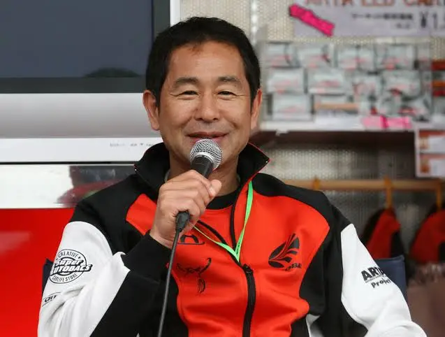

<!DOCTYPE html>
<html lang="en">
<head>
    <meta charset="UTF-8">
    <meta name="viewport" content="width=device-width, initial-scale=1.0">
    <link rel="stylesheet" href="style.css">
    <title>FORMULA DRIFT</title>
</head>
<body>
  <footer>
    <a href="https://www.youtube.com/redirect?event=video_description&redir_token=QUFFLUhqbEZBRlluVUt3eGVTNDVRZ3M1UkJoS1lObTV3Z3xBQ3Jtc0ttYjBtUW5IYnJWVjlydG1MamNDSDFaR2NTRFROQzVZaFE1eTFJR0NsTW52cjJnUkZYYW9fQkw1NFFFeFBoSjd1THZETFQycUdod0NBRjNwSThMQ3NlbTg5XzNpSXo0RU5YQjFKVkdFeGhobUNFWnZxYw&q=http%3A%2F%2Fwww.formulad.com%2F&v=PiXXvned77U"> Formula Drift</a>
    <a href=""></a>
    <a href=""></a>
    <a href=""></a>
    <a href=""></a>
  </header>
 <h1>
  FORMULA DRIFT:TUDO SOBRE O MAIOR CAMPEONATO  DE DRIFT MUNDIAL</h1> 

<p class="1">
  A Fórmula Drift é uma categoria do automobilismo de drift dos Estados Unidos fundada em 2004, inspirada na D1 Grand Prix, esta que começou inicialmente no Japão, cuja inspiração teve inicio num piloto japonês, chamado Kunimitsu Takahashi, criador da técnica em 1970 e se expandiu por todo mundo.
</p>
  <p>
  É uma competição automobilística onde os pilotos demonstram habilidades no drift, uma técnica de condução onde o carro desliza com as rodas traseiras, controlando o ângulo de derrapagem. A competição envolve diversas categorias, como Pro, Pro2 e ProAM, e os pilotos são avaliados em critérios como estilo, linha de drift, velocidade e ângulo de derrapagem. A Fórmula Drift permite modificações nos carros, incluindo troca de motor e ajustes na suspensão, com o objetivo de otimizar o desempenho no drift. 
  </p>
  <h2></h2>
<ul>
  <li></li>
  <li></li>
</ul>
</body>
</html>
